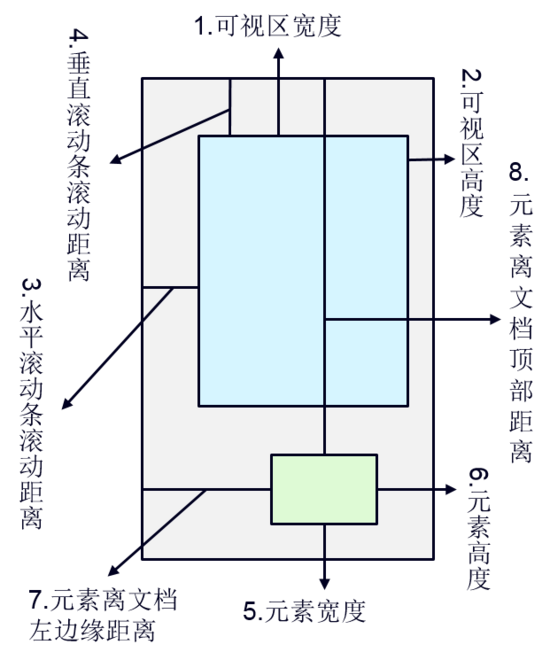
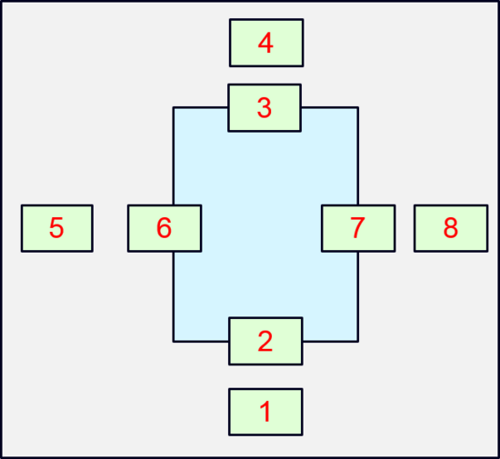
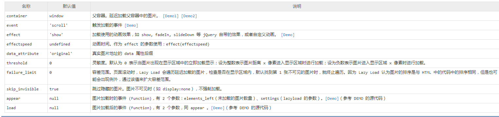

滚动加载（懒加载）图片
一、 什么是图片滚动加载？
图片滚动加载，也就是懒加载（lazyload），它用于延迟加载长页面中的图片，在浏览器可视区域外的图片不会被载入，当进入可视区域时图片才会被加载出来。
二、 为什么要使用懒加载技术
当一个网页中含有大量图片时，只有所有的图片被加载下来之后，整个页面才会展现出来。往往这个过程是缓慢的。如果用户一直不会浏览到底部的图片而我们却在开始就把所有的图片下载出来，用户需要等待大量的时间，大大增加了用户的跳出率。减少了网站对用户的黏度。其实对于这个页面来说，用户是从上到下浏览的，而当用户浏览页面的顶部时，我们没有必要也给用户加载底端的图片，只要加载用户可以看到的页面内部的图片就可以了。
所以lazyload就是基于这个场景设计的。只加载用户看到的页面的图片。其他的图片先不加载，等到用户看到时，再加载。lazyload应用电商网站或者是需要大量排布图片的网站上，可以有效地减少服务器负担，节省资源，加快浏览速度，从而提升用户浏览体验。
三、 怎么实现懒加载
懒加载有现成的jq插件——lazyload.js使用，这个插件十分的快捷方便。
在讲解lazyload的使用之前，我们先了解一下实现lazyload的一些知识，了解这些知识我们可以自己用jquery或者原生js写出lazyload的加载效果

1. 可视区域宽度/高度(1/2)
原生js方法：window.innerWidth/document.documentElement.offsetWidth(IE不含滚动条)/document.documentElement.clientwidth(IE含滚动条)
jq方法：$(window).width()/$(window).height()
2. 水平/垂直滚动距离(3/4)
原生js方法：把onscroll事件绑定到window对象上通过获取document.documentElement.scrollTop和document.body.scrollTop两者之间较大值为网页的真实滚动高度
jq方法：$(document).scrollTop()/$(document).scrollTop()
3. 元素宽度/高度（5/6）
$(obj).width() = obj.style.width;$(obj).innerWidth() = obj.style.width+obj.style.padding;$(obj).outerWidth() = obj.offsetWidth = obj.style.width+obj.style.padding+obj.style.border;$(obj).outerWidth(true) = obj.style.width+obj.style.padding+obj.style.border+obj.style.margin;
注意：要使用原生的style.xxx方法获取属性，这个元素必须已经有内嵌的样式，如
<div style="...."></div>；如果原先是通过外部或内部样式表定义css样式，必须使用
obj.currentStyle[xxx] || document.defaultView.getComputedStyle(0)[xxx]来获取样式值4. 元素离文档顶部/左边距离
原生js方法：obj.clientWidth/obg.clientHeight
jq方法：$(obj).offset().top/$(obj).offset().left
那么如何判断元素进入可视区域了呢？

从图片就很容易看出来，只要做个简单的判断就可以了。
比如1和2，1是未进入可视区域的，2是已经进入可视区域的，当文档往上走，1将走到2的位置，我们只要判断1或2的距离顶部的距离小于可视区域的高度，并且元素的右边距离左边界的距离大于0，并且元素左边距离左边界的距离小于可视区域的宽的时候，元素就进入可视区域。其他同理。
如果要自己使用原生js或者jq来实现懒加载，那么请结合上面的知识来编写代码，原生js或jq的写法以后将更新
现在来讲解lazyload.js
1.引入文件
lazyload依赖与jquery，所以先引入jquery和lazyload(我使用百度静态资源库，当然也可以下载下来)
|
|
2.编写html代码
将真实图片地址写在data-original属性中，而 src属性中的图片换成占位符的图片（例如1x1像素的灰色图片或者loading的gif 图片）
添加 class="lazy"用于区别哪些图片需要延时加载，当然你也可以换成别的关键词，修改的同时记得修改调用时的jq选择器
添加width和height属性有助于在图片未加载时占满所需要的空间 (一定要加width和height属性)
|
|
3.调用lazyload
|
|
- 属性之间一定要用逗号隔开 *
这样就可以做出一个拥有滚动加载的页面了
常用参数说明
载入使用何种效果
|
|
参数：effect(特效)，值有show(直接显示)，fadeIn(淡入)，slideDown(下拉)等，常用fadeIn
提前开始加载
|
|
参数:threshold，值为数字，代表页面高度。如设置为200，表示滚动条在离目标位置还有200的高度时就开始加载图片，可以做到不让用户察觉
事件触发时才加载
|
|
参数:event，值有click(点击)，mouseover(鼠标划过)，sporty(运动的)，foobar(…).可以实现鼠标莫过或点击图片才开始加载，后两个值未测试…
对某容器中的图片实现效果
|
|
参数:container，值为某容器.lazyload默认在拉动浏览器滚动条时生效，这个参数可以让你在拉动某DIV的滚动条时依次加载其中的图片
图片排序混乱时
|
|
参数:failurelimit，值为数字.lazyload默认在找到第一张不在可见区域里的图片时则不再继续加载，但当HTML容器混乱的时候可能出现可见区域内图片并没加载出来的情况，failurelimit意在加载N张可见区域外的图片，以避免出现这个问题
